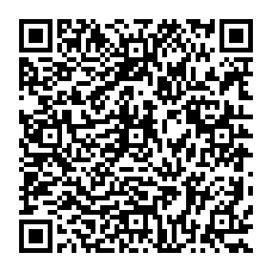

You, the donor
Keep the private opening to your donation receipt. Decide when to share it.
PRIVATE GIVING. SELECTIVE DISCLOSURE.
Keep your identity private from the recipient, and share verifiable evidence when you choose.
No wallet needed for the browser demo. Testnet uses valueless tokens.
TWO WAYS TO TRY IT
Start in your browser, or bring Lace and follow the flow on Midnight Preview.
Play the donor, see what the recipient sees, and send your private receipt to the demonstration tax verifier.
Connect your wallet, set up a recipient, and make a shielded test-token donation with a verifiable on-chain receipt commitment.
ONE DONATION. TWO DESTINATIONS.
Your recipient receives the donation. You keep the private receipt, then choose whether to share it with a verifier.
Your taxpayer label stays out of the recipient’s view.
Keep the private details that open its public commitment.
The local authority demo checks the evidence you disclose.
TEST TOKENS · DEMO DONATION
TEST TOKENS RECEIVED
DEMONSTRATION VERIFIER
PRIVACY WITH A PURPOSE
Keep the private opening to your donation receipt. Decide when to share it.
Receives the donation without your taxpayer label or private receipt opening.
Checks a deliberately shared receipt against the recorded commitment. The demonstration runs locally.
This app demonstrates private giving and verifiable disclosure. It is not connected to a tax authority, does not establish your legal identity and does not guarantee tax deductibility. Transaction timing and other metadata can still reveal information. Read the privacy and trust model ↗
SUPPORT DEVELOPMENT
Enjoying Quiet Giving? You can support IBKR-BouncyBot with a little NIGHT or ADA on Cardano. Scan the QR code or copy the address below. Thank you for helping me keep building.
NIGHT or ADA receiving address · Cardano mainnet
addr1q85w2v474ywzx868s69pghygek3vrhxm69e7c6ysuf28qhv8kmj5wd059grxl82f8h5mtyzl87cvqj8ldv2e0las7tnsdej9axTips are optional. Both demos are free. This is a Cardano mainnet support address, separate from the app’s Preview wallets and valueless test tokens. A support tip does not create a Quiet Giving tax receipt.
